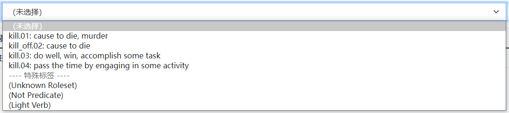

标注流程¶
人工参数标注任务包括谓词选择、角色集选择和参数标注三阶段。其中，参数标注必须与选择的角色集相对应。标注者需注册登陆标注网页 方可进行标注。下面对三个标注阶段进行详细说明。
谓词选择¶
正常情况下，谓词为单词，由后端自动识别，并自动标注为 REL（Relation）标签。少数情况下，谓词为词组（介词短语/复合单词拆分），标注者需要在自动识别结果的基础上，参考角色集选项，对谓词词组进行补充标注。
例如，kill 的第二个角色集实际对应的谓词为 kill off，标注者如果选择了该角色集，须将句中的 kill 和 off 两个单词合并标注为 REL。

识别错误的谓词¶
若自动识别的谓词满足下述任一条件，则认为识别错误，仅将角色集选为 Not Predicate，无需进行后续标注：
- 谓词是定语形容词或副词；
- 谓词是不含动作性的名词，不指代任何事件或状态，如“He has drawn a picture of her.”中的 picture（注意与“He has taken a picture of her.”比较，这里的 picture 是伸展动词 take picture 的一部分，按下述轻动词标注规则标注）；
- 谓词是某个介词或连词结构的一部分，如 according to 中的 according；
- 句中不存在与该谓词的任意角色集所匹配的参数，如“The death penalty prevents crimes.”中的 crimes（但如果存在修饰参数，即使句中没有可用的编号参数，也请保留正确的角色集）；
- 其他标注者判定为非谓词的情形。
角色集选择¶
一般情况下，结合谓词在句子中的结构与含义选择相应的角色集即可。如果谓词难以确定角色集，则它有可能是轻动词，或者角色集数据库没有收录这一角色集，请按照对应的情况处理。
轻动词¶
若谓词是动词且符合下列描述，则认为该谓词是轻动词，角色集选择 Light Verb，无需进行后续标注（但是对应的名词作谓词时请将动词标注为 ARGM-LVB）：
- 谓词与一个指代事件（event）或状态（state） 的名词绑定成为短语，而谓词不承担主要实义，如 take a bath 中的 take；
- 【谓词 + 名词】的短语可以被仅与名词词义相关的动词所取代，如 make a mistake 与 mistaken；
- 谓词的主语和名词存在主从关系，而谓词在其间起到联系作用，如“I made/got a call.”中 I 分别是 call 的主语和宾语。
实际标注时，请首先查找谓词是否存在不作为轻动词的角色集能够匹配句中的用法，特别地可以比较一下角色集详情提供的标注示例。如果发现了相关的非轻动词角色集，请优先选择该角色集并据此标注参数；如果没有相关角色集，或者只有明确表示作轻动词使用的角色集时，才考虑按照上述标准选择 Light Verb，但是 不要选择对应的轻动词角色集 （它们仅用于占位和额外说明）。
角色集缺失¶
若不存在符合句意的角色集，请选择角色集 Unknown Roleset，并将谓词的动因（agent）标注为 ARG-0, 受动者（patient）标注为 ARG-1，同时标注与谓词有关的修饰参数。
参数标注¶
参考角色集及相应例句，优先标注编号参数（ARG-0,1,2,...），其次标注修饰参数（ARG-M）。部分特殊句式的处理方式如下：
关系从句¶
- 谓词在主句中，先行词有参数意义，则将先行词与定语从句合并标注为一个参数；
- 谓词在从句中，关系词有参数意义，则将先行词标注为参数，关系词标注为该参数的引用。
语义结构整体标注¶
- 介宾结构和 to do 不定式作为整体进行标注；
- 冠词和随后的名词作为整体进行标注。
单引号缩写¶
默认以单引号为界拆分缩写结构为两个单词，需分辨如下情景进行标注：
- 否定缩写，如 shouldn't 中的 should 和 n't，分别标注；
- 所有格缩写，如 people's 中的 people 和 's，同时选中、合并标注。
形式主语¶
作为形式主语的 it（如在“It is clear that I'm unclear.”中）无须标注。
系动词后谓词¶
如果存在修饰系动词的否定词与情态动词，则当系动词引导形容词谓词时（如“It is not successful.”）这些否定词与情态动词也视为修饰形容词谓词，但当系动词引导名词谓词时（如“It is not a success.”）否定词与情态动词不修饰名词谓词。
错误报告¶
若发现存在以下情形，请通过标注页面的错误提交功能反馈相关问题：
- 自动分词错误；
- 谓词未被识别；
- 无合适角色集；
- 参数类型缺失；
- 其它标注问题。
报告错误时，请首先选择错误分类，再详细描述错误原因，方便后续分析与处理。